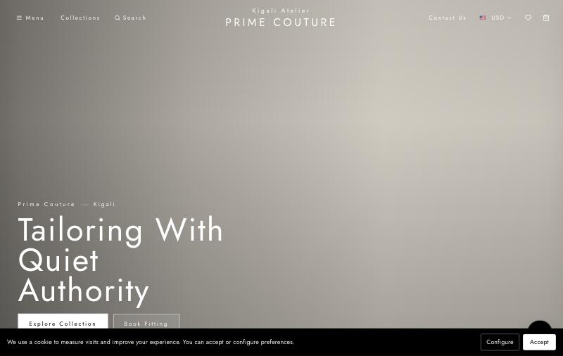
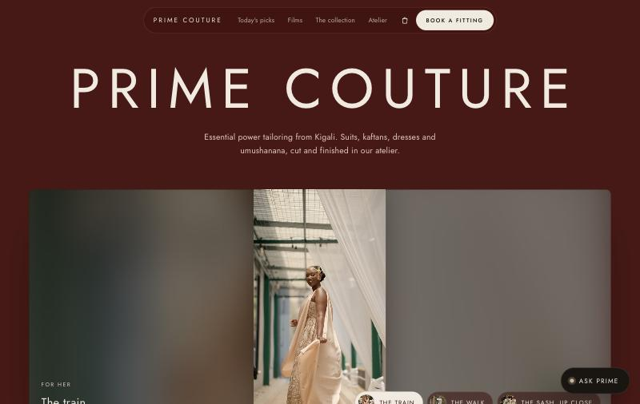

Before and after
Drag across the frame. Both are the homepage at the same screen size, a few seconds after loading.


TodayProposedIn our test load of the current site, the hero still showed a grey gradient after four seconds, and the cookie bar covered the buttons.
What changed
We kept the photography, the Jost typeface, the line "Tailoring With Quiet Authority", WhatsApp checkout and fitting bookings. The changes show the clothes sooner and remove steps between browsing and ordering.
Search first, on a clean white page
The page opens on white, with their oxblood kept for the actions: search, booking and the active filter. Search is the main button and answers as you type, with pictures and prices, and the piece on the right changes to match. Book a fitting sits beside it as the second choice.
A full-screen image that showed grey in our test load.
The first second shows your clothes, on real clients, in motion.
Today's picks that move
The ten pieces visitors open most drift slowly across the screen. Hover one and it turns to show another photograph; the row stops while you look.
Two films on the home page, without context.
Visitors find the moment that matches their own occasion.
Our pieces, then the full collection
The home page shows Men and Women with their types and counts. Those links, the cart and "View all pieces" open the collection page: all 51 pieces with search, sort and a filter sidebar. Visitors choose filters and press Apply, and the page returns to the top of the results. Each piece opens its own page with every photo, its RWF price and your description.
A grid sorted by category only.
People shop for an occasion by colour. This is the shortest path from feeling to piece.
Prime concierge
An assistant on every screen. It answers what you make, prices, address and hours, shows matching pieces as pictures, and fills in the fitting form.
A chat box with human handoff.
Questions get answered at any hour, and lead straight to a piece or a booking.
Inside the atelier
No banner at the top. Visitors choose where to look: the showroom in real photographs, or the atelier in fittings filmed for Instagram, shown as films only. Then the visit details.
An address in the footer.
People see the space and the craft before they come in.
A fitting form that listens
It asks the occasion first, then whether it is for a woman, a man or both. After that it shows only the pieces you make for that occasion and person, with matching pieces from the collection to tap. Then a calendar, a name and a summary. The site writes the WhatsApp message.
A "Book Fitting" button.
The atelier receives what it needs in the first message.
Prices in the visitor's currency
Switch between RWF, USD, EUR, GBP, KES and UGX from the header, the collection, any piece or the bag. Each piece also lists its price in every currency.
RWF, USD or GBP in the header.
Diaspora and visiting clients read prices without converting, while RWF stays the set price.
On a phone
- Film firstThe brand name, two lines, then the film screen with three film buttons.
- Filters in a drawerOn the collection page, filters slide in from the side and apply when you press Show.
- Ask PrimeThe concierge opens full screen, with suggested questions to tap.
- This phone is liveScroll inside it.
Status and next steps
This is a design prototype. It uses your real pieces, prices and contact details, and hands off to WhatsApp like the current site.
Still to connect
- RWF prices are yours. USD, EUR, GBP, KES and UGX are approximate conversions at fixed rates.
- The 51 pieces, prices and descriptions are copied from your catalogue on 16 November. The build would read them live, so new pieces appear automatically.
- The private-list form shows a confirmation but does not store emails yet.
- The atelier page plays your Instagram reels through Instagram's own player, cropped to the film. On claude.ai, where Instagram cannot be embedded, they show as links instead.
- There are no children's pieces in your catalogue yet, so the home page shows Men and Women. A Kids category can be added when you have pieces for it.
- The concierge uses Claude when the page is opened in Claude, and built-in answers everywhere else. A public launch would connect it to a hosted assistant.
Next steps
- Walk through the prototype together and agree the direction.
- Connect it to your product catalogue, bag and WhatsApp checkout.
- Test it with a few clients on their phones.
- Launch, then design the product pages in the same style.